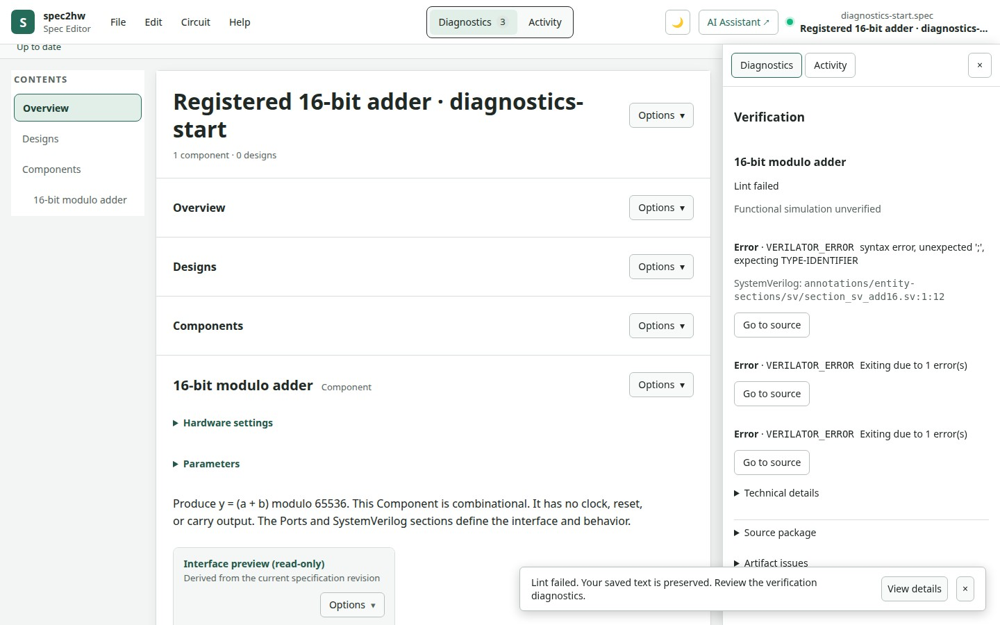
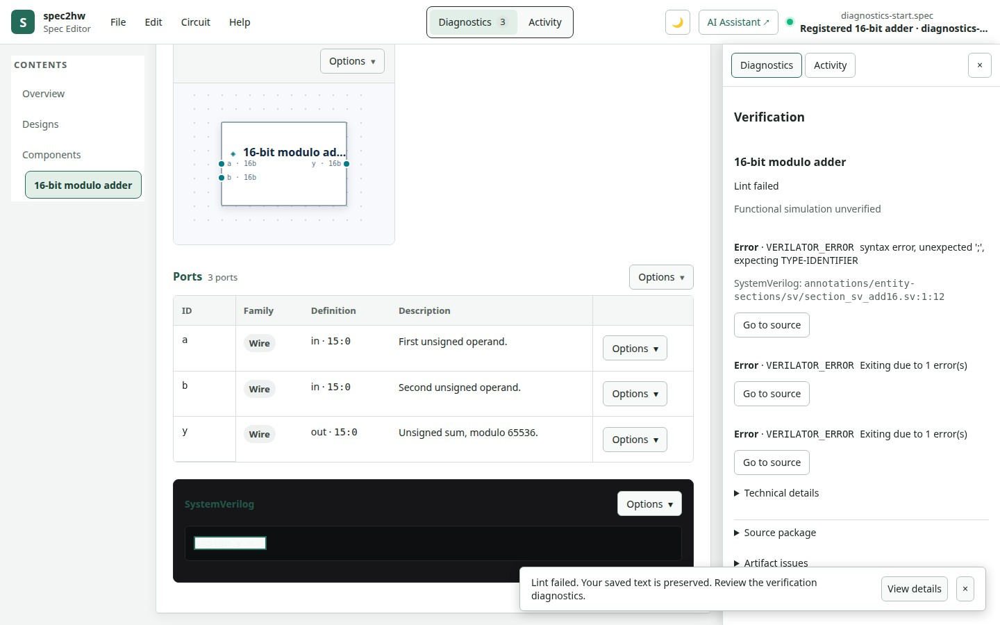
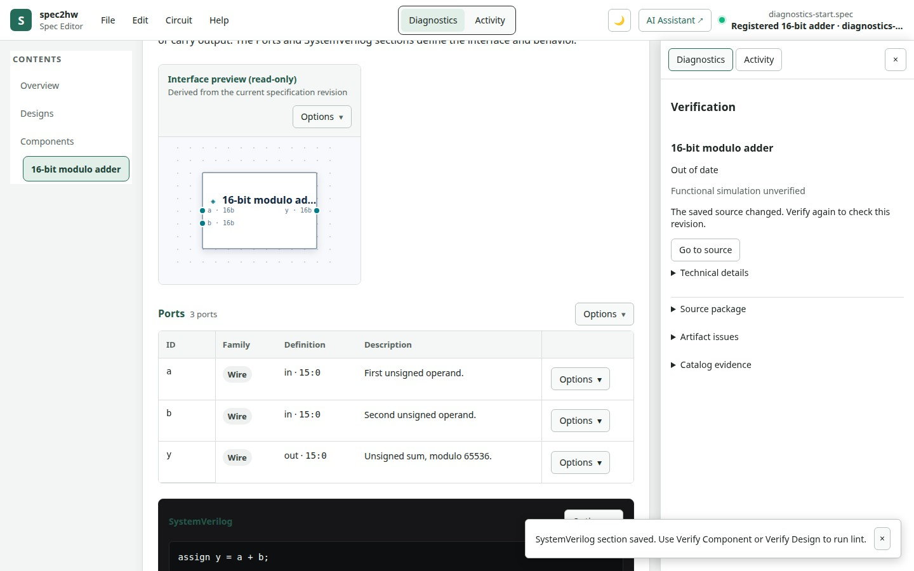

SPEC EDITOR · GUIDED PRACTICE
Diagnose and correct a failed check
Use Diagnostics to correct saved source and distinguish current and stale results.
Before you start
Spec Editor and Verilator 5.x. Use the separate diagnostics start; do not break your completed core Spec.
Read each action, do it, then compare the expected result before continuing. Use a fresh prepared start to retry. Reading time and automated execution time are not measured learner practice time.
Actions
Inspect the starting source
Opendiagnostics-start.spec. Locate the adder’s SystemVerilog section.Expected result: The three-port adder contains the valid assignment. No core exercise file is changed.
Save a known error
In the SystemVerilog heading, select Options → Edit. Replace its body withassign y = ;and select Save to Spec.Expected result: The invalid compiler input is saved. Format-valid authoring does not automatically run a compiler.
Verify without opening the panel
Select the Component’s Options → Verify Component. Leave Diagnostics closed.Expected result: A Lint failed notification appears. The document has no verification report or status badge.
Open the finding
Select View details, or use the Diagnostics toolbar button after the notification expires. Find the adder’s report.Expected result: The actionable message and checked target appear first. Opening the tab does not clear findings.

Diagnostics groups the failed check under the saved adder target. Select the image to view its full size. Go to saved source
Inspect the diagnostic’s file location and select Go to source.Expected result: The relevant target or Section opens. A line is highlighted only if its saved revision still matches and no private draft covers it.

Go to source returns to the relevant saved SystemVerilog section. Select the image to view its full size. Correct the body
Edit the SystemVerilog section back to the body below and Save to Spec.assign y = a + b;Expected result: The assignment is saved. The earlier failed report is now stale and is not proof about this revision.

An earlier result becomes stale after a source change. Select the image to view its full size. Run a fresh check
Select Verify Component again, then inspect Diagnostics.Expected result: With the required compiler available, the fresh result is Lint passed for this saved revision.
Inspect details and return
Expand Technical details to inspect the tool and saved revision. Close the panel with Close or Escape and reopen the Spec.Expected result: The corrected source persists. A generated RTL file location would navigate to the checked target without pretending its line is a source Section line.


Check your result
The known source error was saved, detected, corrected, and checked again. Current and stale reports are not confused.
Try it yourself
Open a private text draft, then open and resize Diagnostics and switch to Activity. Confirm the draft and document position remain. Cancel that draft.
If it fails
If Verilator is unavailable, record Not verified and leave the compiler exercise incomplete. If Go to source does not highlight a line, compare the saved revision and draft state; do not force a line match.
Continue
CONTINUEExplore another feature →Reference: spec editor · Complete example